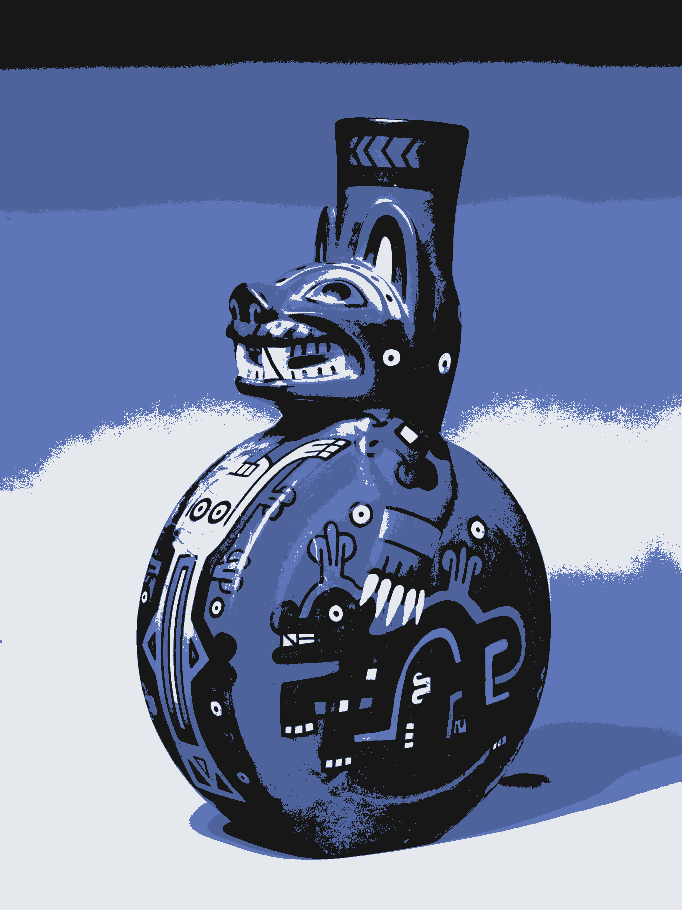

█▀▀
██▄staba justo enfrente. Iluminé la puerta. Entre Pío y Arguelles, calculé. Uno de tantos pasadizos de aquella ciudad subterránea. Tomé mis apuntes: mapas y mensajes arrancados de tantos crípticos graffitis que esconde Madrid. Tenía que ser aquí. Sentí cerca el bramido ronco del metro, y de pronto me invadió una fuerte sensación de vacío. Aquí abajo, solo, mi escuálida linterna entre tanta oscuridad. Igual tenían razón. Igual no existe. Dije la contraseña con desgana, como tantas otras veces, pero esta vez me sorprendió un gemido de apertura. Una ranura de luz cálida invitaba; olía a café y libros clandestinos.
El Enclave Subterráneo
